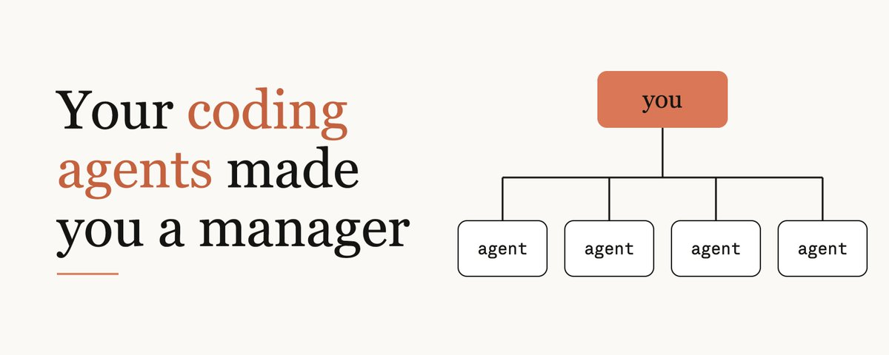
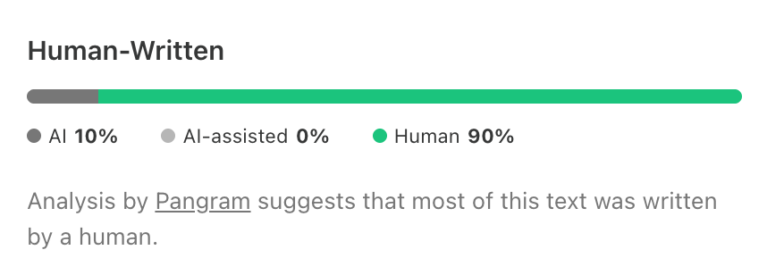

写代码的 agent，把你做成了管理者
Addy Osmani 这篇说：整天和 coding agent 待在一起，你已经在做管理。他用的 management，是靠让别人的工作做成来产出好结果，不是叫你去当那种消失在日历里的经理。
X 原文 Claude Code 最佳实践 精读版（加密，需密码） 他以前的另一篇 另见：批判性思维导读约 25 分钟
补充：学习搭子的判断。价值不在多开几个 agent，而在把完成条件、它能自己跑的检查，以及必须由人决定的事说清楚。测试证明的是已经检查的性质，不替代产品取舍。管理类比只覆盖任务怎么交、怎么验，不替代带人。

管 agent 用的本事，大体上就是带一个小组的本事。你不必先当上经理才能学。
整天和 coding agent 待在一起，你已经在做管理：挑任务、写指令、交出去、跟进、看结果、决定什么可以发出去。从 agent 身上拿到最多的人，不一定最会写 prompt。他们是学会了管理的人，有意也好，无意也好。
这可能让人不舒服。作者佩服的很多工程师走了个人贡献者 IC 的路，想离工作近一点。他们看见朋友当了经理，就消失在日历里。作者说他不是叫你去当那种经理。他说的 management，是靠让别人的工作做成，来产出好结果。他也写明，agent 不是经理或同事的替代。
你对坏经理的每一条抱怨，都是和 agent 打交道时的一份缺陷报告。交接就是例子。一次坏的交接，可能让人觉得要求含糊、缺少背景，或者期望老在变。对 IC 来说，你多年站在接收的一端，可能已经知道好的交接长什么样。
作者以前写过：你的 coding agent 需要一个管理者。他也写过委派时安静的风险，cognitive surrender。这一篇拿好的工程管理者的做法，对照使用和制作 Claude Code 时学到的东西。各节大约按影响排，杠杆最高的习惯放在最前。
先给一个能判过或不过的检查
先给它一种办法，让它自己检查工作。
好的做法：给 agent 一个验证机制，比如测试套件、构建或截图，并让它把结果亮出来当证据。
反例：把 looks done 当成确认。验证就全压在你身上，你变成了 agent 的测试套件。
问有经验的管理者，怎样不用读完一切就相信团队做得好，他们会说到护栏：CI、代码评审、仪表盘、on-call。CI 是持续集成里的自动检查。不建护栏的新管理者会自己验证一切，一个季度之内自己变成瓶颈。agent 也一样。Claude Code 的最佳实践指南说，工作看起来完成，agent 就停。没有验证时，looks done 就是它仅有的验证。有了机制，它才能做完、跑验证、看见失败、自己改。改界面时，可以真的在浏览器里打开页面，改到能用，也好看。
验证机制几乎可以是任何东西，只要它给出明确的过或不过。可以是测试、构建的退出码、linter、diff 脚本和截图。指南说，跑这些验证的那条命令，是 CLAUDE.md 里最有用的一行。CLAUDE.md 是 agent 每次会话开始时读的说明。有了机制，就可以放进下面这些做法。
直接吩咐：做完之后跑 auth 测试，一直跑到通过。
设一个目标。/goal 会让另一个模型在每一轮之后检查条件。做很长的后台工作时，这最有用。
用强制。hook 是碰到特定事件就运行的脚本。Stop hook 在这一轮将要结束时运行，可以挡住结束，直到 typecheck 通过。
拿去评审。/code-review 把 diff 交给一个新的 subagent，它没看过你这段对话。就像作者不能批准自己的 PR。
评审范围也可以收窄。你若叫它找问题，它总会找出一点。你若叫它只找正确性的问题、忽略风格，它就照这个范围做。好的管理者要反馈时也是这样问。Claude Code 工具箱的大部分功能，都在收紧这个环。Skills、hooks、subagents 和 MCP，都是为了接上做事和验证，只有 agent 验证不了的部分才留给你看。有经验的工程管理者就是这样做的。
2026-11-08 核对过 code.claude.com 的 best-practices。当时与本文一致的有：/goal 由另一个模型每轮检查，Stop hook 可在结束前拦住，/code-review 交给没看过对话的 subagent，auto mode 会拦生产部署和 force push，/rewind 可回退代码或对话，以及可以停用 ALL CAPS、think harder 和 don't be lazy。/batch 同是 5 到 30，官方页写 units，本文写 tasks，计划一节按 tasks 保留。
2s 和 10k+ 是举例，不是测出来的
把 agent 看仓库也看不出来的背景写清楚。
好的做法：写清任务目标、为什么重要、约束、不在范围内的事，以及怎样算成功。这些是它检查仓库也得不到的。
反例：只丢一行任务，真正的期望留在你脑子里；或者把 agent 读代码就能发现的东西垫进简报。
有效的管理者会写清想要的结果、约束和目标。他们说工作要达成什么，但让做事的人自己决定怎么做。军队里叫 commander's intent。Netflix 叫 context, not control。
难处是你很难知道它缺哪一段背景。coding agent 每件任务的第一件事，是读你的代码。当前模型抓目录结构、约定和测试布置，比你描述得快很多。
动笔之前先想它自己能推出什么。代码里能读到、而且它真的会去读，你就不必说。把字花在仓库里没有的部分，例如会上的决定、某人内部的发布流程、这件事为什么重要、这一次怎样算做完。
例子是把一句含糊的 make the dashboard faster，改写为一段 prompt。作者写明，这里的数字只是举例。
这段示例把要做的事、Why、Constraints、Out of scope 和 Check 写在一起。这里只摘出范围约束，不是完整任务说明。这里的 2s 和 10k+ 只是举例，是作者放进例子的数字，不是他测出来的性能。
Out of scope: UI changes; caching the whole page.不是每件任务都要写成这样。做探索时，写一句普通 prompt 完全可以，边做边收紧一点。你若还写不出 prompt，可以让 agent 先问你，问到它能写出规格，把规格存成文件，再开一个新会话按规格做。这份规格以后也能拿来对照。
你可能还要给它别的工具，比如问题跟踪、错误仪表盘或团队聊天。把它当成团队里的新人。像 gh 这种它已经知道的命令行工具，你常常不必再解释。
同一件事纠正超过一次，就写下来
同一次纠正，要能留下来给下一次用。
好的做法：同一件事纠正超过一次，就写进团队的 CLAUDE.md，或做成共享的 skill。过一阵再看，新模型是否还需要这些纠正。
反例：每个会话都手动纠正同一件事，或者只有你自己机器上才存在的默会知识。
把 CLAUDE.md 用出价值的团队，会常常隔一阵更新它，并把值得防止的错误写下来。有的团队甚至在代码评审里 @claude，把反馈变成长期规则。CLAUDE.md 要保持短。适合放进去的是下面几类。
怎样验证一件事，要写出确切的命令。
代码里容易让人看错的地方。
仓库里找不到的那些决定。
你已经纠正过两次的任何事。
这些都是写下来之后会积累的例子。人换了团队，模型被换掉，它还在。
默认让它决定，硬限制只留给不可违反的要求
默认让它自己决定。只有不可违反的要求，才做成硬限制。
好的做法：默认让 agent 决定。硬执行只有少数必须总是发生、或绝不能发生的事才用得上。hooks 是碰到特定事件就运行的脚本。deny rules 是事先写明、一律不许做的操作。
反例：用全大写写规则，给可选的偏好装上 hook，或者新模型早已不需要的旧习惯还留着。
Andy Grove 的 High Output Management 把这叫做 task-relevant maturity。监督该多紧，看的是这个人在这一项具体任务上的表现历史，不是他的总体能力。
给新管理者的一句老建议是同一件事：给人的余地比你觉得舒服的程度再多一点，同时替他们撑住，并要他们负责。
Claude Code 把这件事写明了。prompts、CLAUDE.md 和 skills 是请求，模型可以考虑，也可以选择不做。hooks、deny rules 和 managed settings 是要求，总会执行。多数情况下，你希望 agent 自己做决定。常常是模型看着真实代码，比你事先写的规则更知道一条指南用不用得上。硬要求的例子是 never edit the generated client，以及 always run the license-header script。新的终端和 VS Code 会话从 auto mode 开始，分类器会滤掉不安全的行为，例如部署到生产，或 force push 盖过别人的工作。managed settings 是组织统一下发、这一次会话里改不掉的设置。
指南的建议有两面。你把 CLAUDE.md 的一行强调得更重，agent 仍然不照做，它就该变成 hook。一个 hook 若只是偏好，不是要求，就该拿掉，让 agent 自己决定。就像团队退役一条不再有用的流程。换了新模型也要调整。指南列了可以停的习惯：全大写的指示、think harder（effort 现在是一项设置），以及 don't be lazy。对当前模型，这些容易变成过度的硬规则，也容易让它过度干活。对 agent 来说，过度流程就是新的微观管理。
先对计划，再拆开不重叠的并行
先把计划说定，再让它写代码。
好的做法：开始写代码之前，先有一份说定的计划，读出里面的隐含假设，并把任务拆成互不重叠的并行工作。
反例：几个 agent 同时做互相重叠的任务，然后一下午都在解合并冲突和重复的决定。
一个好的流程是先进入 plan mode，把计划改到对的那一版，再把编码交出去。计划好的时候，模型常常可以一轮做完。更大的任务，用第二个会话像 staff engineer 那样看这份计划。这是设计评审，是抓住走错方向最便宜的地方。看计划时要找隐含假设。原文说的 1:1 里，这就是问：你不确定什么？
拆分越来越交给 agent。Claude Code 的 /batch 拿一个大的机械改动，做成 5 到 30 个任务，把计划展示出来，在各自的 worktree 里执行。worktree 是仓库的单独检出。每个任务再开一个 PR。你不必再亲自把活切开，只要检查这些切片有没有重叠，并让共享接口先落地。没有这一步，你可能会得到虚假的并行。五个 agent 做重叠的任务，不会变成五倍产出，而是一份有五个作者的合并冲突。code.claude.com best-practices 在 2026-11-08 把同样的 5 到 30 写成 units。这篇 X 原文写的是 tasks。页面保留 tasks。
看第一分钟；纠正失败两次就重开
第一分钟就看。一偏离就纠偏。纠偏两次还不行，就重开。
好的做法：看第一分钟，并随时纠偏。一看见偏离就纠正。如果纠正已经失败了两次，就开一个新会话，用更好的 prompt 重来。
反例：再加第三次或第四次纠正，却不去改原来的请求。
有经验的管理者知道，一个有能力的人若多次失手，问题可能在上游：指令、背景或范围。agent 这边写得很明确：一偏离就按 Esc。已经有两次纠正失败，就清掉会话，把学到的写进更好的 prompt。第三次纠正，多半只是更多材料，要模型反复重读、重算，里面还包括那些失败的尝试。
便宜的回退也在改变做法。/rewind 把代码和对话滚回更早的一点，所以可以先试更大胆的做法，风险不高。好的管理者对员工也这样：撤销若便宜，就让他们试大胆的做法。然后做回顾。适用的话，把修正收进 CLAUDE.md。
活可以交，判断不能交
任务可以交出去。判断不能交。
好的做法：agent 干活。重要的事你来定，包括产品取舍、安全边界，以及什么可以发出去。每一份 diff，都当成你会为它被叫起来。
反例：测试是绿的、名字看起来合理，就批准大段 diff。这不是代码评审，这是代码追认。
没有管理者能说，那是我的下属发出去的，不是我。你跑的每一个 agent 也一样。作者说他自己掉进过这个坑。他让 agent 去研究相对竞品的缺口，并写本地 PR 来补。他读了研究，扫了代码，几乎就要把改动推上去。那些改动给用户加了复杂度，收益却很小。他交出去的是工作，几乎把决定也交出去。这个坑很容易掉进去：一份 600 行的 diff，名字看起来合理，测试是绿的，于是批准。
这样拆是说得通的。风格、lint、评审之后的跟进、典型的 bug 和单元测试，交给 agent。安全边界、合规和产品决定，留给人。
协调也一样。agent 可以记住交接。在互相竞争的请求之间做决定，并让人真正承诺下来，仍然是人的工作。
你不必站在每一次改动的内环里。你要守住的是外环：约束是什么，输出你实际读了多少，你留下什么证据，什么必须由人签。改动要保持小，因为评审的单位，就是能看懂的单位。
自己跑之前，先答完那五个问题
放它自己跑之前，先把这场运行设计完。
好的做法：放下一个自主任务之前，先定义完成、它怎么自己验证、边界、护栏，以及人在哪里批准。
反例：睡前启动一个长过程，没有完成的定义，也没有停止点。第二天早上发现，模型整夜都在一个错误的前提上干活。
越级管理者不管单个工程师手头的活。他们管目标、护栏、检查点和负责人。AI agent 走的是类似的路。它们已经把任务的一部分交给 sub-agents，也可以按日程跑，在 CI 失败之后跑，或在新的 PR 打开之后跑。前沿是能自己启动、自己验证，只有需要做决定时才叫人的系统。
角色从控制这一次会话，变成设计这些环。下面五个问题，就是好的管理者把项目交给资深工程师、然后去休假之前要问的问题。
它知道完成长什么样吗？可以是目标条件、一份规格，或一个必须跑绿的失败测试。
它有自己的验证吗？可以是测试套件、Stop hook，或一步评审。
边界在哪里？可以是权限、sandbox、worktree，或它被允许推上去的那一个分支。
护栏是什么？可以是轮次上限，或花费上限。
产出放在哪里，谁来批？可以是一个 PR 或一份摘要。任何不能撤回的动作，要有人批准。
指南还有两条管理者认得的习惯。先试点：让一批任务先在三个文件上跑，改 prompt，再跑其余。任何新东西，在你信任它可以无人值守之前，先看头几次运行。把它想成一段试用期。
可以扩大的是验证，不是盯梢
可以增加的是验证，不是你盯着看的时间。
好的做法：agent 加得多快，只能快到检查、目标和换了新上下文的评审者接得住的程度。除了吞吐，还要量质量。
反例：开的会话多到你评审不好，还用 AI 写了多少代码来当成功。
管理者很快知道自己能有效跟进多少任务。直接下属过了某个数量，每个人分到的管理者都变少，质量就下降。agent 也一样。作者把这叫做 orchestration tax：过了开头的几个，每再加一个 agent，需要你的注意力比上一个更多。他大多数日子跑四五个后台 agent，再加几个本地会话。有些日子，这就已经太多。这是他写自己的日子，不是一条人人适用的定额。
管很多会话，不是靠自己更专注。是把大部分监视交给自检、目标和换了新上下文的评审者，把注意力留给决定。有通知，就不必一直去轮询。后台任务要有一个集中的视图。你不能靠盯得更多来增加 agent 的数量，只能靠需要盯的更少。然后去量这个系统，而不是量忙碌。有用的指标包括 PR 的周期、新员工上手要多久、回滚或返工有多频繁。AI 写的代码占多少比例，不是一个有用的目标，因为要的是质量和可靠。Grove 的规则是，量一个数就要配一个对冲：你若量合并了多少 PR，也要量回滚和返工。
做起来便宜之后，难的是该不该做
做起来便宜之后，还要决定哪些事情不做。
好的做法：问谁需要它，你怎样知道它做成了，什么情况你会停，并限制 WIP。WIP 是同时正在做、还没完成的任务。
反例：每个说得通的想法都丢进一个 PR。毕竟做起来便宜。团队于是要评审、检查安全性，并继续维护这些做出来的东西。
管理者最重要的一个词，常常是 no。面对 agent，说 no 更难。开工几乎不花钱，午饭前你就可以把任何说得通的想法丢进 PR。然后就有一堆 PR，要团队去评审、保护、支持和维护。现在稀缺的是评审和验证。
那些旧的管理问题，现在比以前更要紧。谁提出来的？怎样量成功？怎样知道该停？做起来便宜的时候，难的问题不是能不能做，而是该不该做。
能跑五个 agent，不等于能管五个人
这个把 agent 比作带人的说法，有几处会断。
好的做法：管理里的好做法可以跟着用，但要算上 agent 的不同。例如返工便宜、它们很容易同意，以及每次模型发布，强项都会变。
反例：把 agent 当成就是一名初级开发者，或者以为你能跑五个 agent，就准备好了去管五个人。
这个比喻有用，但不完整。把这件事做得好的人，知道它哪里不完整。
管人更难，这些技能也不能倒回去用。你跑过五个 agent，并不等于准备好管五个人。动力、冲突、职业发展，以及要以月来算的信任，都没有对应物。
作者认为，返工几乎不花钱。这是他的看法，不是说评审和维护也没有成本。你可以让 agent 做你绝不会开口让人做的事。白板上起了技术争论，agent 可以做出两个或三个方案，供你比较。
agent 没有经验，只有一个笔记本。Auto memory 只把笔记记在一台机器上。它们进不了同事的会话。它们不是你在职业生涯里养成的经验和判断。那些教训要写下来给整个团队。这里说的是这个笔记本和 auto memory，不是把所有 agent 产品说成同一种东西。
agent 积极，而且自信。你让一个好的工程师去做错的事，他会顶回来。agent 更可能照你说的做，你也可能会过度信任它。作者引用 Wharton 关于 cognitive surrender 的研究：参与者在多数时候接受了有错的 AI 答案，并且变得更有信心。这是作者的引用，不是我们做的实验。原文没有给出具体比例。要对付这种过度自信，可以让 agent 反驳它自己的答案。
你只有一种 agent 的原型，而且每隔几个月就会变。人的团队里，技能和强项是散开的。你这些 agent 的强项和弱项是同一套，并跟着每一次模型发布一起变。
初级开发者，你仍然要带。agent 拿走了他们用来学手艺的起步工作之后，你得作为管理者，有意做出那些练习。
人的团队仍然要紧。有时候你管 agent 管了一整天，才发现挤掉了把团队聚在一起的时间。不要这样。
反馈按分钟来，练习因此变便宜
推动好软件交付，并不需要那个经理头衔。
好的做法：把力气放在推动好软件交付。设定背景，定义完成，把评审做好。
反例：agent 既缺少交代，也没有检查，你却用代码行数来评价自己。
好的 staff engineer 一直就是这样。他们写设计文档，设定背景，做彻底的评审，让周围的人变得更好。agent 让每个工程师从第一天就能这样做。这是一门管理的速成。反馈按分钟来，不是按季度来。你可以撤销自己的错误。这份工作越来越少是自己写代码，越多是成为好代码被写出来的那个原因。
没有人生来就是出色的管理者，也没有人生来就是出色的工程师。技能还是靠练习长出来。有了 agent，这种练习变便宜了。
六条可以照着做的收尾
作者在结尾给了一组可以试的做法。
每件任务都要有一个它自己能跑的检查。向它要证据。
告诉 agent 它看不见的那些，略掉它自己能看见的。
写代码之前，先把计划谈清楚。
同一件事纠正了两次，就写进 CLAUDE.md。重复的工作流，就做成 skill。
两次纠正都失败了，就重开，并把 prompt 重写一遍。
看 diff 的时候，当成你会为它被叫起来。
你不必想去当管理者。但把 agent 用得好的工程师，会在路上学会管理。

三道题，只考边界
这三题考的是原文边界。答错只标你选的那一项。